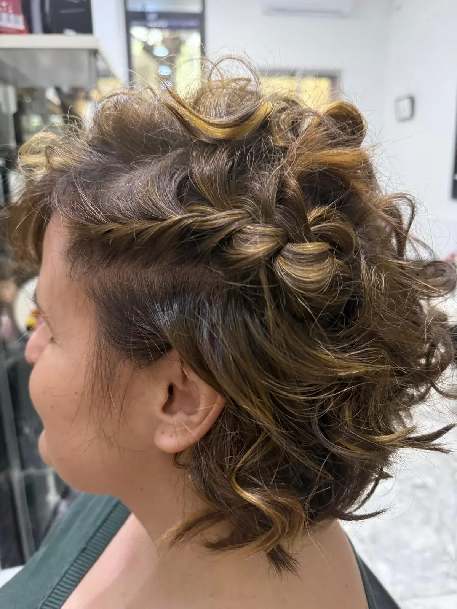

El acabado
Hablamos de textura, volumen y de si quieres llevar el cabello suelto o recogido.
Peinados y acabados · Puente de Vallecas
Ondas, trenzados y peinados con movimiento para el día a día o una ocasión especial. Empezamos por saber qué acabado quieres y cómo es tu cabello.
Pedir cita por teléfono ↗
La forma de trabajar de Zache
Un peinado puede acompañar un corte, dar otro aire a una melena o resolver el look de una celebración. En Zache trabajamos peinados y acabados desde la textura y el largo reales, sin dar por hecho que todo el mundo busca el mismo volumen o la misma onda.
Cuéntanos si prefieres un resultado suelto, ondas, un detalle trenzado o un semirrecogido. Las fotografías de referencia nos ayudan a concretar la dirección. Si buscas un trabajo para una boda u otro evento, consulta también recogidos para celebraciones para preparar el conjunto y la fecha.
Hablamos de textura, volumen y de si quieres llevar el cabello suelto o recogido.
Adaptamos la idea al largo, la densidad y el movimiento con los que partimos.
Si tienes una celebración, cuéntanos la fecha y el look para comprobar la agenda.
Consulta al llamar qué incluye el peinado, el precio y la disponibilidad. La duración depende del trabajo que acordemos.
Antes de pedir cita
Para una consulta sobre tu cabello o la agenda, llámanos y lo vemos contigo.
Sí. Puedes ver ejemplos propios en la galería de trabajos. Adaptamos el acabado al largo y la textura de tu cabello.
El trabajo que necesitas depende del acabado y de la ocasión. Si buscas un recogido para una celebración, tienes más información en recogidos y eventos.
Dinos el largo de tu cabello, el acabado que buscas y, si hay una celebración, la fecha. Consulta el precio, qué incluye y cuánto tiempo debes reservar.
Actualmente concertamos las citas por teléfono en el 914 77 27 37. Comprobamos contigo el servicio y la disponibilidad antes de reservar.
Cita por teléfono
Estamos en Calle de Javier de Miguel, 7 · 28018 Madrid. Llámanos para consultar el servicio y concertar tu cita.
Llamar al 914 77 27 37 ↗